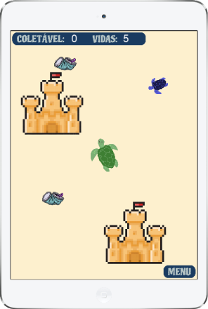

Projeto desenvolvido durante o curso Além de Jogar, Eu Faço Jogos! do
CPDI em parceria com o Instituto Cooperforte.
Todos os direitos reservados aos desenvolvedores.
Desenvolvido em Florianópolis, 2023.
Criadores: Arthur R. Hass, Ellen Lopes, Lucas Dutra, Raíssa F. G.
Batista.
Natural de Brasília - DF, formada em Educação Física Bacharelado e
Licenciatura. Trabalhei como professora de todas as idades.
Estou entrando na área de tecnologia em busca de conhecimento nas
linguagens como LUA, CSS e HTML para acrescentar no meu currículo.
Nesse projeto fui responsável pelos conteúdos e relatórios durante o
desenvolvimento do website.
Raíssa F. G. Batista
Natural de Florianópolis - SC, formado em Técnico em Refrigeração e Ar
Condicionado pelo IFSC e desenvolvedor Web e Lua pelo CPDI.
Desde que conheci o mundo da programação tenho cada vez mais certeza
que é isso que eu quero pro meu futuro e estou sempre em busca de
novos conhecimentos, me aprimorando e qualificando para o mercado.
Neste projeto fiquei responsável pela criação de fases, escrita do
código , estrutura e interação do website.
Lucas Dutra
Natural de Florianópolis/SC, formada em Design pela UFSC desde 2015.
Trabalhei como Designer de Interiores durante 6 anos.
Em 2021 comecei minha transição de carreira em UX e UI Design, e
durante o percurso inicie minha trajetória na área de programação.
Com os conhecimentos adquiridos em LUA, HTML e CSS neste projeto
fiquei responsável pela parte visual e desenvolvimento da logo,
contribuí com o planejamento e construção do enredo do game,
desenvolvimento dos cenários, estrutura e layout do website.
Ellen Silveira Lopes
Natural de Florianópolis - SC, formado em Tecnólogo em Mecatrônica e
Técnico em Eletrônica pelo IFSC, trabalhei como técnico por quase 10
anos, agora estudando programação de Jogos em LUA e a criação de sites
em HTML5 e CSS, como ja gostava de jogar, a criação de jogos parece um
caminho natural a ser seguido, e espero no futuro poder aprender mais
e trabalhar com isso.
Neste projeto fiquei responsável pela criação de fases e programação
em geral do jogo, e algumas adições de conteúdo no site.
Arthur Rodrigues Hass
O Grupo 7, foi formado por sorteio durante o curso do CPDI - Além de Jogar eu Faço Jogos!, onde tínhamos por meta, a criação de um jogo que engloba os
ODS, vistos também durante o curso. Depois de um brainstorming, foi definido a escolha do ODS 14, visto acima, e com ele a escolha de representa-lo através do ciclo
de vida de uma
tartaruga marinha. Nasceu o Sea Turtle Life, onde todos os membros puderam expressar sua criatividade no
desenvolvimento da narrativa, das fases e dos personagens.
SOBRE NÓS
14.1: Até 2025, prevenir e reduzir significativamente a poluição
marinha de todos os tipos, especialmente a advinda de atividades
terrestres, incluindo detritos marinhos e a poluição por
nutrientes;
14.2:
Até 2020, gerir de forma sustentável e proteger os ecossistemas
marinhos e costeiros para evitar impactos adversos significativos,
inclusive por meio do reforço da sua capacidade de resiliência, e
tomar medidas para a sua restauração, a fim de assegurar oceanos
saudáveis e produtivos;
14.3:
Minimizar e enfrentar os impactos da acidificação dos oceanos,
inclusive por meio do reforço da cooperação científica em todos os
níveis;
14.4: Até 2020, efetivamente regular a coleta, e acabar com a
sobrepesca, ilegal, não reportada e não regulamentada e as
práticas de pesca destrutivas, e implementar planos de gestão com
base científica, para restaurar populações de peixes no menor
tempo possível, pelo menos a níveis que possam produzir rendimento
máximo sustentável, como determinado por suas características
biológicas;
14.5:
Até 2020, conservar pelo menos 10% das zonas costeiras e marinhas,
de acordo com a legislação nacional e internacional, e com base na
melhor informação científica disponível;
14.6:
Até 2020, proibir certas formas de subsídios à pesca, que
contribuem para a sobrecapacidade e a sobrepesca, e eliminar os
subsídios que contribuam para a pesca ilegal, não reportada e não
regulamentada, e abster-se de introduzir novos subsídios como
estes, reconhecendo que o tratamento especial e diferenciado
adequado e eficaz para os países em desenvolvimento e os países
menos desenvolvidos deve ser parte integrante da negociação sobre
subsídios à pesca da Organização Mundial do Comércio;
14.7: Até 2030, aumentar os benefícios econômicos para os pequenos
Estados insulares em desenvolvimento e os países menos
desenvolvidos, a partir do uso sustentável dos recursos marinhos,
inclusive por meio de uma gestão sustentável da pesca, aquicultura
e turismo;
14.a:
Aumentar o conhecimento científico, desenvolver capacidades de
pesquisa e transferir tecnologia marinha, tendo em conta os
critérios e orientações sobre a Transferência de Tecnologia
Marinha da Comissão Oceanográfica Intergovernamental, a fim de
melhorar a saúde dos oceanos e aumentar a contribuição da
biodiversidade marinha para o desenvolvimento dos países em
desenvolvimento, em particular os pequenos Estados insulares em
desenvolvimento e os países menos desenvolvidos;
14.b:
Proporcionar o acesso dos pescadores artesanais de pequena escala
aos recursos marinhos e mercados;
14.c:
Assegurar a conservação e o uso sustentável dos oceanos e seus
recursos pela implementação do direito internacional, como
refletido na UNCLOS [Convenção das Nações Unidas sobre o Direito
do Mar], que provê o arcabouço legal para a conservação e
utilização sustentável dos oceanos e dos seus recursos, conforme
registrado no parágrafo 158 do “Futuro Que Queremos”.
Objetivos
O ODS 14 consiste na conservação e uso sustentável
dos oceanos, dos mares e dos recursos marinhos para o desenvolvimento
sustentável.
ODS 14 - Vida na Água
Os Objetivos de Desenvolvimento Sustentável (ODS) que fazem parte da chamada “Agenda 2030”. Trata-se de um pacto global assinado durante a
Cúpula das Nações Unidas em 2015, pelos 193 países membros.
A Turtle Baby
precisa da sua ajuda para conseguir passar por todos os obstáculos em
seu caminho. Há muitos predadores e infelizmente muito lixo nas praias
e oceanos. Mas você pode guiar a pequena
Turtle
para que ela passe por todas as fases e chegue com segurança no seu
destino final.
Baixe o jogo agora e encare mais este desafio!
Que tal viver uma aventura SEA TURTLE LIFE?
DOWNLOAD
Assista ao vídeo e viva esta aventura!
FASE 4
FASE 3
FASE 2

FASE 1
O jogo é dividido em quatro fases:
FASE 1:
Ao nascerem, as tartaruguinhas seguem imediatamente para o alto
mar. O
jogo inicia-se com a Turtle Baby
saindo da praia com o objetivo de chegar no mar sã e salva, ela
precisa alcançar as algas para completar a fase.
FASE 2: A jovem Turtle
deve completar 20 pontos levando as sacolas até a lixeira, e as
águas-vivas para alimentar o grupo de tartaruguinhas.
FASE 3:
É o jogo da memória, o objetivo é encontrar todos os pares das
Turtles
adultas, para que o acasalamento seja concluído e a desova possa
acontecer futuramente.
FASE 4: É necessário ajudar a Turtle
para que ela sobreviva e consiga migrar. O objetivo é mantê-la
nadando e não deixar que ela caia e vire comida para os
predadores.
Fases
Utilizamos como fonte de inspiração para o nosso jogo o projeto
TAMAR que é voltado para conservação das tartarugas marinhas em todo o território brasileiro.
As tartarugas marinhas
apresentam um ciclo de vida complexo, utilizando diferentes
ambientes ao longo da vida, o que implica em mudanças de hábitos.
Embora sejam marinhas, utilizam o ambiente terrestre (praia) para
desova, garantindo o local adequado à incubação dos ovos e o
nascimento dos filhotes.
O jogo
consiste em passar por todas as fases do ciclo de vida da
tartaruga marinha, fazendo com que ela siga por todas as etapas sobrevivendo aos
predadores, ao acúmulo de materiais descartados nos oceanos e
praias. Desde o seu nascimento, passando por sua vida jovem e adulta
até chegar a fase da desova na praia.